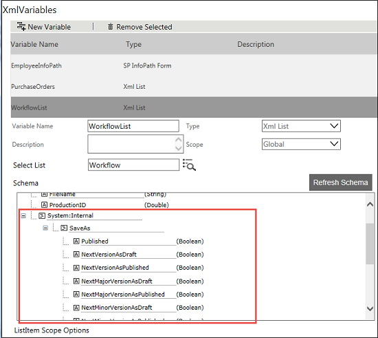
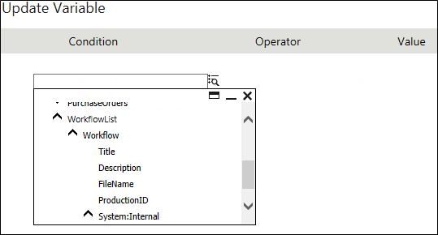
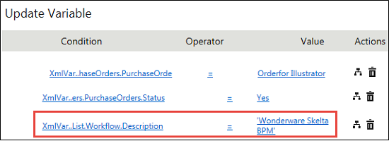
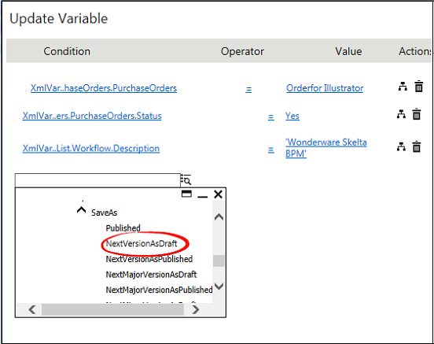
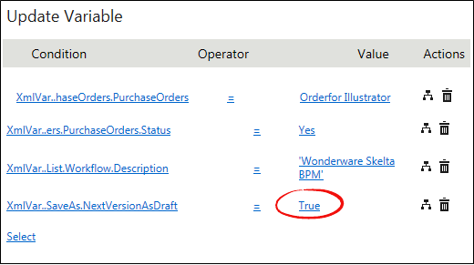

No
Saving the List Item as Different Version as Draft/Published Using Xml Variable
There are two kinds of list, version enabled and version not enabled. If your list is version enabled, you can save the item as a different version as published or draft using System Internal variables. This can be done at the time of setting the value for activity.
Assume that you are creating a workflow and it is attached to the out of box list workflow which is version enabled.
To save the list item as different version as draft/published using Xml Variable
- Right-click the Start activity and select Activity Properties from the options.
- Click the edit icon in the field. The following screen is displayed.
 - For the version enabled list, you can see the list of schema in a tree-view under System:Internal. Nodes include Save As > NextVersionAsDraft, NextVersionAsPublished, and so on. You can use these nodes to save an item to another version as draft or published.
- Use List Query and point to an item that you want to update and save as different version. See Setting up the List Query Scope.
- Drag and drop Update Variable activity. Click the edit icon in the Set Variables field.
- Click the Select link and then click the drop-down list that appears.
 - Assume that you want to update the item Description having the value 'AVEVA Work Tasks'. Select Description from the drop-down list and enter the value as 'AVEVA Work Tasks'.
 - If you want to save this item as Next Version > Draft, click the drop-down.
 - Select NextVersionAsDraft from the SaveAs options under System:Internal.
- Enter the value as 'True'.
 - Click OK. This will update the item Title and also save the item as next version as draft.
- In the same way, you can save any item to different versions like Next Major Version as Published/Draft, Next Minor Version as Published/Draft while updating the item.
Note: If you select multiple SaveAs conditions and set the value as True, the last condition will be taken into account and the item will be saved based on the last condition. Also for the list that is not version enabled, the system will automatically save the item as published.